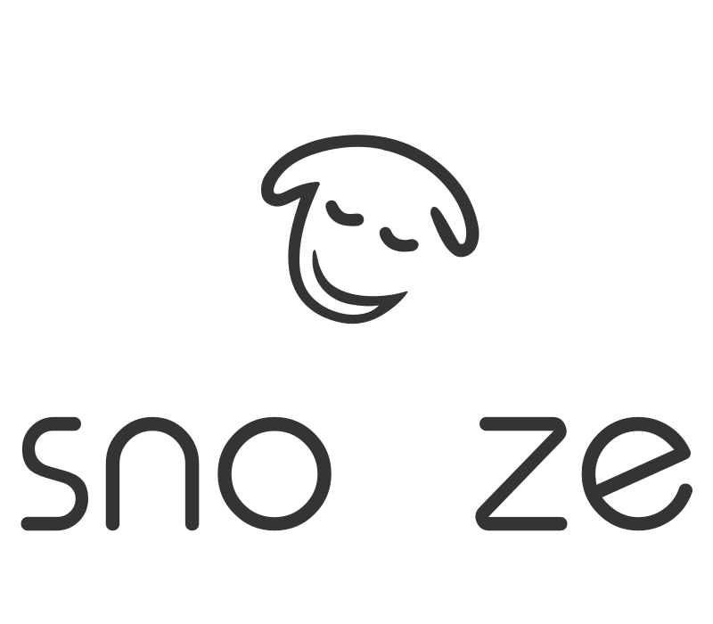

{{ 'SLIDES_WELCOME' | translate }}
{{ 'SLIDES_TEXT1' | translate }}
{{ 'SLIDES_TEXT2' | translate }}

{{ 'SLIDES_TEXT3' | translate }}

{{ 'SLIDES_TEXT4' | translate }}

{{ 'SLIDES_TEXT1' | translate }}
{{ 'SLIDES_TEXT2' | translate }}
{{ 'SLIDES_TEXT3' | translate }}
{{ 'SLIDES_TEXT4' | translate }}